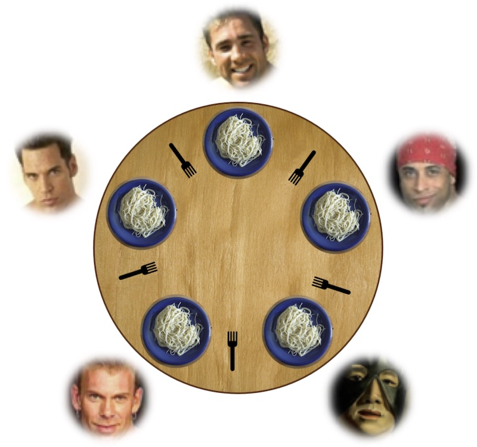

本讲概述
我们已经学习了操作系统上的互斥，也学习了如何用互斥锁实现并发数据结构 (malloc/free)。
互斥能满足所有要求吗？
- 同步问题
- 生产者-消费者问题
- 哲学家吃饭问题
- 条件变量和信号量
同步
同步 (Synchronization)
两个或两个以上随时间变化的量在变化过程中保持一定的相对关系
- iTunes同步 (手机 vs 电脑)
- 变速箱同步器 (合并快慢速齿轮)
- 同步电机 (转子与磁场速度一致)
- 同步电路 (由时钟驱动)
- 线程同步 (在某个时间点共同达到一致的状态)
异步 (Asynchronous) = 不同步
- 上述很多例子都有异步版本 (异步电机、异步电路、异步线程)
并发程序中的同步
理解并发程序的方法：把线程想象成我们自己。
等待某个汇合点后各自继续行动 (不确定的等待) 
- NPY：等我洗个头就出门/等我打完这局游戏就来
- 舍友：等我写完这段代码就吃饭
- 导师：等我出差回来就讨论这个课题
并发
- 两个线程各自完成某件事
互斥
- 上厕所排好队，一个接一个
同步
- 在未来某个约定的时刻，两个线程的执行点互相可知
- 通常是先到的线程等待
同步：更直观的解释
同步：“系统中存在一个时刻，两个线程的 sync() 同时返回”
- 并发执行是不确定的
- 因此 sync 之后的操作可能有先后
- 先执行到的人需要等待
void npy_thread() {
play_game(); // 打完这一把
sync();
}
void me_thread() {
make_up(); // 洗个头先
if (!npy_is_ready()) annoyed = 1;
sync();
if (annoyed) {
complain(); // ~!@*#!%@#%
}
}
// after sync():
// both make_up() and play_game() are done同步的例子: join
这个程序正确吗？
- 让我们运行 (调试) 一下吧！
int done;
void workload() {
// workload
asm volatile("lock addq $1, %0" :
"=m"(done)); // sync(): 顺序、原子、可见
}
int main() {
for (int i = 0; i < nworkers; i++)
create(workload);
while (done != nworkers); // sync(): 等到所有 workers 都完成
printf("All done\n");
}生产者-消费者问题
生产者-消费者问题
并发控制中的最经典问题，能解决 90% 的实际并发问题
- 生产者 (线程) 生产资源 (一个对象)，生产时间不确定
- 缓冲区里没有空余的空间存放生产的对象时等待
- 消费者 (线程) 消费资源 (取走一个对象)，消费时间也不确定
- 缓冲区里没有对象可以消费时等待
- 如何协调它们的生产/消费？
void consumer_thread() {
while (1) {
object_t *obj = dequeue(); // spin：队列可能没有元素
if (obj) consume(obj);
}
}
void producer_thread() {
while (1) {
object_t *obj = produce();
while (enqueue(obj) != SUCC); // spin: 队列可能空间不足
}
}生产者-消费者：另一种表达
(更精简的表达) 有两种线程
void type1_thread() {
while (1) printf("("); // enqueue
}
void type2_thread() {
while (1) printf(")"); // dequeue
}在不受并发控制的前提下，任意的括号序列都是合法的
但我们需要进行适当的线程同步，使打印的括号序列满足：
- 一定是某个合法括号序列的前缀
- 括号嵌套的深度不超过
- 例如
((())())(((合法(((()))),(()))不合法
条件变量
Conditional Variables (条件变量, CV)
条件变量是最符合 “同步” 直觉含义本质的方法。
- 当你不会做同步的题目的时候，就用条件变量耍流氓吧！
非常直观的同步方法
- 同步的本质：当某个条件满足时，线程执行，否则等待
- 洗完头后，npy 打完游戏时继续执行；否则等待
- 左括号：深度 时继续；右括号： 时继续；否则等待
用一个对象来表示条件的满足/不满足！
- 条件不满足，随时可以在这个对象上等待
- 另一个线程发现条件满足，唤醒一个 (或所有) 正在等待的线程
条件变量 API
对于一个条件变量 cv：
- wait(cv) 💤
- 进入睡眠状态，等待 cv 上的事件发生
- signal/notify(cv) 💬 私信：走起
- 报告 cv 上的事件发生
- 如果有线程正在等待 cv，则唤醒其中一个线程
- broadcast/notifyAll(cv) 📣 所有人：走起
- 报告 cv 上的事件发生
- 唤醒全部正在等待 cv 的线程
条件变量 API (cont'd)
和互斥锁联合使用
mutex_lock(&mutex);
// 任意代码 <-----------+
// |
wait(&cv, &mutex); // |
// |
// 任意代码 (包括循环) ---+
mutex_unlock(&mutex);
// signal 不受互斥锁的约束- wait 会立即释放锁并等待
- 被 signal 后恢复执行，会首先试图获得 mutex
条件变量：生产者-消费者问题
void producer_thread() {
while (1) {
// produce
mutex_lock(&mutex);
if (count == n) wait(&cv, &mutex); // 等待“有空闲”
printf("("); // push
count++; signal(&cv);
mutex_unlock(&mutex);
}
}
void consumer_thread() {
while (1) {
mutex_lock(&mutex);
if (count == 0) wait(&cv, &mutex); // 等待“有数据”
printf(")"); // pop
count--; signal(&cv);
mutex_unlock(&mutex);
// consume
}
}- mutex 大幅简化了正确性的证明
小结：条件变量 = 万能的同步算法
一个条件变量代表一个 “条件”
- wait() 等待条件发生
- 条件发生后 signal() 唤醒等待的线程
- 和互斥锁联合使用
“耍流氓”
- 条件变量不满足时 wait spin + 一旦条件可能满足，就唤醒所有等待的人
mutex_lock(&big_lock);
while (!(cond)) {
wait(&cv, &big_lock);
}
assert(cond); // 一定为真
// 其他需要原子性的操作
mutex_unlock(&big_lock);信号量
更衣室管理
我们学过的互斥锁：只允许一个人进入更衣室
in(&pool)- 等待管理员给他一个手环；如果没有则排队等待out(&pool)- 把手环还给管理员

更衣室管理 (cont'd)
完全没有必要限制手环的数量——让更多同学可以进入更衣室
- 管理员可以持有任意数量的手环 (更衣室容量上限)
- 先进入更衣室的同学先得到
- 后进入更衣室的同学需要等待
(有内味了)
更衣室管理 (cont'd)

做一点扩展——线程可以任意 “变出” 一个手环
- 把手环看成是令牌
- 得到令牌的可以进入执行
- 可以随时创建令牌
“手环” = “令牌” = “一个资源” = “信号量” (semaphore)
- P(&sem) - prolaag = try + decrease; wait; down; in
- 等待一个手环后返回
- 如果此时管理员手上有空闲的手环，立即返回
- V(&sem) - verhoog = increase; post; up; out
- 变出一个手环，送给管理员
信号量 (E. W. Dijkstra)

信号量 = 互斥锁和条件变量的结合体
- 互斥锁
- 仅有一个手环的情况
- P = lock; V = unlock
- 条件变量
- 手环的数量作为等待的条件
- P = wait; V = signal
- 因为计数器的存在，不会发生 signal “丢失”
信号量：实现生产者-消费者
信号量设计的重点
- 考虑 “手环” (每一单位的 “资源” 是什么)
- 谁创造？谁获取？
void producer() {
P(&empty); // P()返回 -> 得到手环
printf("("); // 假设线程安全
V(&fill);
}
void consumer() {
P(&fill);
printf(")");
V(&empty);
}- 不要被这种简单的假象骗了！
- 信号量好用，但没有那么好用！！
哲学家吃饭问题
哲学家吃饭问题 (E. W. Dijkstra, 1960)
哲学家 (线程) 有时思考，有时吃饭
- 吃饭需要同时得到左手和右手的叉子
- 当叉子被其他人占有时，必须等待，如何完成同步？
- 如何用信号量实现？

E. W. Dijkstra 一定是哲 ♂ 学爱好者，给问题起名都这么哲学
忘了信号量，让我们来耍流氓吧！
#define cond (empty[lhs] && empty[rhs])
void philosopher(int id) {
int lhs = (id - 1 + n) % n, rhs = (id + 1) % n;
mutex_lock(&mutex);
while (!cond) {
wait(&cv, &mutex);
}
assert(cond);
empty[lhs] = empty[rhs] = 0;
mutex_unlock(&mutex);
__philosopher_eat();
mutex_lock(&mutex);
emtpy[lhs] = empty[rhs] = 1;
broadcast(&cv); // (耍流氓) 对所有人喊：叉子放回去啦，快看看吧！
mutex_unlock(&mutex);
}忘了信号量，让一个人集中管理叉子吧！
“Master/Slave”
- 分布式系统中非常常见的解决思路 (HDFS, ...)
void philosopher(int id) {
send_request(id, EAT);
P(allowed[id]); // 直到manager允许我吃了才开始
__philosopher_eat();
send_request(id, DONE);
}
void manager() {
while (1) {
(id, status) = receive_request();
if (status == EAT) { ... }
if (status == DONE) { ... }
}
}忘了那些复杂的同步算法吧
你可能会觉得，管叉子的人是性能瓶颈
- 一大桌人吃饭，每个人都叫服务员的感觉
抛开 workload 谈优化就是耍流氓
- eat (实际的 workload) 时间可能远大于请求 (几个内存操作) 时间
- 如果一个 manager 搞不定，可以分多个
- 把系统设计好，使集中管理不成为瓶颈
- M. Brooker, et al. Millions of tiny databases, In Proc. of NSDI, 2020.
- 看 Amazon 是怎么通过拆分管理数百万个配置数据库的！
Takeaways and Wrap-up
同步：让线程在某件事发生时汇聚在同一个点
- 典型问题：join, 生产者/消费者, 哲学家吃饭问题
- 实现方法：条件变量、信号量、master/slave
复习题
- 用条件变量/信号量实现
threads.h中的join - 去年的期中考试题
- 系统中有四种进程，分别打印
[,(,],) - 使用条件变量同步，满足
- 输出的序列一定是某个合法括号序列的前缀
- 括号嵌套的深度不超过
- 不能出现中括号嵌套在小括号里的情况
- 允许：
[[(())()()]()]; 不允许：([])
- 允许：
- 碰上复杂的同步，当然是用条件变量了……
- 系统中有四种进程，分别打印